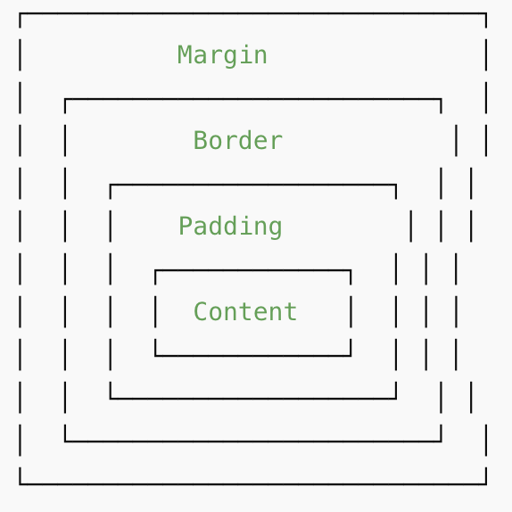

HTML stands for HyperText Markup Language. It is the standard language for creating web pages and web applications. HTML describes the structure of a web page using markup. HTML elements are represented by tags, which label pieces of content such as headings, paragraphs, links, images, and other items.
This is the standard text with p for paragraph
This is bold text
This is italic text
This is underlined text
This is deleted text
This is big text
This is small text
This is subscript text
This is superscript text
This is monospaced text
This is marked text
Click here, its a link!Here is a list
Here is an image of a crumpled paper texture:
Here is some audio from my favorite game that starts with an "m" and ends with an "e"
Here is a video, btw I did this for my music summative in 8th grade if you want to check it out, somehow it got a 6 and a 6+1,
try out 1:19 that took a lot of effort 🪫🪫🪫, don't watch the whole thing it was meant to be hysterically bad.
As you can see, marked text seems to be a bit unique with its additional styling component
How do we apply this to other examples?
This paragraph is styled with red text color.
This paragraph is styled with green text color.
This paragraph is styled with blue text color.
This paragraph has multiple styles applied to it, including text color, font size, background color, border, and padding.
cool, how did we get here?
Html stylizing by using Cascading Style Sheets (CSS) is a powerful way to enhance the appearance of web pages.
CSS allows you to apply styles to HTML elements, controlling aspects such as colors, fonts, spacing, and layout.
How we use CSS is by using the box method provided that allows for more advanced forms of stylization:
Here is an example image demonstrating CSS box model:
Lets work from inside to outside
1. Add padding
This paragraph has padding inside the box.
2. Add border
This one now has a border!
3. Add margin
This paragraph has margin separating it from others.
Lets compare visually
Box 1
Box 2
So as you can see
Usually the margin is just the empty space around the element
The border is the line surrounding the element
The padding is the space between the content and the border, it looks like filler